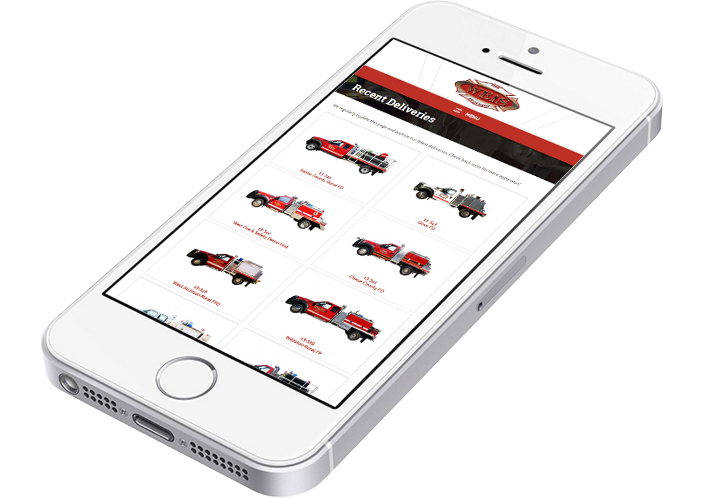

The Complete Overhaul
For over fifty years, Weis Fire & Safety has been serving the fire industry and has grown a long lasting reputation. When I was hired as the Marketing Coordinator for the company in 2014, I was given a blank slate to rebrand the company and design all its new media. The company was ready to step into the mobile age with a new responsive website featuring a modern design that reflected the high-end products the company manufactures and sells.
As outdated as the old site was, so was the rest of the content that revolved around it. Until then, brochures and literature were created in Word, and product photography was limited. I immediately began to create content for the new site and began to build a new identity with photography, color schemes, and consistent typography. Once the direction for the brand was clear, I went about designing the pages for the website. New Boston Creative Group employed the designs as a guide to creating the CMS layout in which the new content could be uploaded to.
One of the key pages on the website is the Fire Truck Recent Deliveries page. Every apparatus that rolls out of the shop is exhibited with a short video and photography of its custom features. Fire Departments use it as a resource when designing their own equipment and storage configurations. With this in mind, the thumbnails of the trucks needed to be uniform so viewers can better compare the main features before further exploring a fire truck. This simple change in structure has made a strong impact on the usability of the page and stimulates curiousty, as the analytics data has shown.
The users and sessions on the website have more than doubled since the redesign and continue to grow. User behaviour data suggests that viewers are going through an average of 45 images per session and spending several minutes at a time on the site, with 75% of visits being from first time users.
The Recent Deliveries page: old website (left) and new design (right).